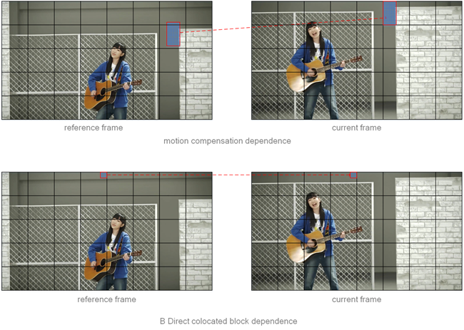
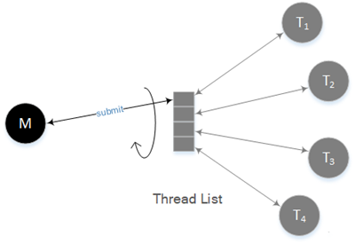
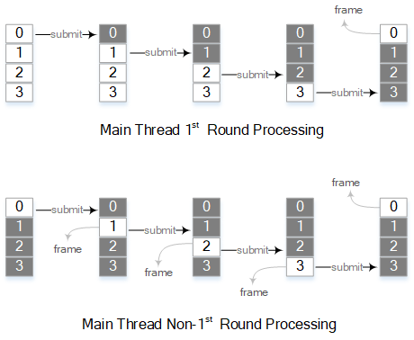
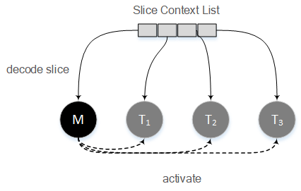

正文
- h.264的POC计算
- 指数哥伦布编码
- h.264加权预测
- h.264码率控制
- h.264直接预测
- h.264 FMO
- h.264参考图像列表、解码图像缓存
- h.264 mvp求解过程
- UMHexagonS搜索过程
- h.264全搜索以及快速全搜索算法
- h.264 率失真优化
- EPZS搜索过程
- Intra Chroma Prediction
- Intra Luma Prediction
- H.264 Transform
- H.264 Quantization
- Quantization Method
- h.264 Mode Decision
- h.264 Bi-Predictive Motion Search
- h.264语法结构分析
- h.264宏块与子宏块类型
- h.264 scanning process for transform coefficients
- CAVLC
- CABAC
- 算术编码JM实现
- h.264并行解码算法分析
- h.264 去块滤波
- h.264并行解码算法2D-Wave实现（基于多核非共享内存系统）
- h.264并行解码算法2D-Wave实现（基于多核共享内存系统）
- h.264并行解码算法3D-Wave实现（基于多核共享内存系统）
- h.264并行熵解码
- CABAC总结与补充讨论
- ffmpeg h264并行解码
- ffmpeg h.264解码所用的主要缓冲区介绍

ffmpeg中的并行解码分为两种：
Frame-level Parallelism
帧间依赖
我们之前讨论过Frame-level Parallelism。在之前的文章中，我们说过在进行帧级的并行处理时，由于I、P帧是作为参考帧（B帧也能作为参考帧），因此不能对其进行并行处理，只有非参考B帧才是最适宜进行并行处理的帧。不过其实如果我们能正确地处理好各个帧之间的依赖关系，无论是I、P还是B帧都能进行并行处理。FFmpeg为了达到这一目的，对我们之前所讨论的Frame-level Parallelism进行了改进：添加帧间依赖。
h264的帧间依赖主要有两个：
进行运动补偿时需要参考帧提供参考区域的像素数据。在解码一个宏块的过程中，得到宏块中每个分块的运动向量与参考帧后，就能确定宏块的各个分块的参考区域，然后就可以从这些区域提取像素数据进行运动补偿。
编码模式为B Direct的宏块在计算运动向量时，需要位于第一个后向参考帧的co-located块的运动向量，用来计算出当前帧的前向以及后向运动向量。

FFmpeg对于上述依赖的解决方案是：对于每个分块，在进行运动补偿之前，等待该分块所依赖的参考区域的最后一行（以像素为单位，表示这一行的值row是相对于整幅图像来说的，下同）的就绪消息[1]。
对于编码模式为B Direct的宏块，在计算运动向量之前，等待co-located块的第一行的就绪消息（由于我们只需要该co-located块的运动向量，既然第一行像素已就绪，那么运动向量肯定是已经就绪了）[2]。
解码器每解码完成一行宏块，就通知发送该宏块的最后一行的就绪消息（如果当前视频指定了deblocking，由于当前行宏块的deblocking需要用到下一行宏块的上方4行像素，因此就绪的row值需要进行相应的调整）[3]。
Packet与Frame
在讨论FFmpeg的实现之前，我们需要先了解packet（AVPacket）与frame（AVFrame）之间的关系。不同的编码格式也许会有所不同，不过h264在FFmpeg中的一个packet中所包含的数据就是一个frame（一帧）。一般情况下一帧就是一个slice，这样的话一个packet中只有一个slice；当然，一帧也有可能会分为多个slice，如果是这种情况的话，一个packet中会包含这一帧所有的slice。
我们之所以在这里讨论这两者之间的关系，是因为FFmpeg每次都是以一个packet为单位向解码器传入需要解码的数据，也就是说每次会向h264解码器传入一帧的数据。
实现方案[4]
FFmpeg实现方案如下：

Thread List，线程列表，线程列表中的每一项都映射一个解码线程。主线程会从线程列表中按照序号由小到大（循环）提取解码线程，并把解码任务提交到该解码线程。同时主线程在提交完解码任务后也会从线程列表中按照序号由小到大（循环）提取解码线程，并尝试从该解码线程获取解码完成的帧。
M，主线程，主要目的有两个：
- 向解码线程提交解码任务。FFmpeg中是以packet为单位进行解码任务的提交的，按照前一小节的描述，FFmpeg就是以frame为单位进行解码任务的提交的。
- 从解码线程获取解码所得的帧并进行返回。不过在第一轮进行任务提交的时候是不会去获取帧，在第一轮任务提交完成后，此时所有解码线程都已经开始进行了解码作业，那么主线程就可以开始等待第一个线程解码完成，然后尝试去获得解码完成的帧（这里的“尝试”，是因为就像单线程解码时那样，并不一定是每次调用解码API都会返回一帧的。由于h264编码的视频中常常包含B帧，这会使得码流的解码顺序并非帧的播放顺序，但是解码API必须按照帧的播放顺序进行返回，因此在进行帧的返回时会进行相应的调整）。接下来每次向一个线程提交一个解码任务后，都需要等待下一个线程空闲并尝试返回帧。

T，解码线程，接收解码任务并进行解码。解码线程是以frame为单位进行处理的。解码线程解码主线程所提交的packet，执行与单线程时一样的解码作业，当然在解码作业期间会碰到我们上面所述的帧间依赖并进行处理。
隐式的帧间依赖
帧间依赖除了上面所述的明显存在的帧间依赖之外，还有一处较为隐蔽的帧间依赖。
解码所需的参考图像列表依赖于POC，而在计算图像POC时，需要对相邻两个frame（或者说slice）头部的pic_order_cnt_lsb或者frame_num进行比较。这就表明在开始一个frame的解码之前，需要把上一个frame的这些参数传入当前frame。有了上一个frame头部的这些参数，当前的frame就能按照单线程解码那样准确地计算出当前frame的POC。
FFmpeg把这参数传入操作实现在了ff_h264_update_thread_context当中，该函数会在提交解码任务前被调用[5]。
Slice-level Parallelism
如我们之前讨论过的Slice-level Parallelism，ffmpeg的slice级并行只能在帧内并行。因此，如果在某个视频在编码时，一帧图像分为多个slice进行编码的话，那么在使用ffmpeg解码时调用slice级并行解码就会得到不错的效果。而在实际应用中，大多数h264编码的视频都是一帧只有一个slice，对于这种视频，就算采用了slice级并行，也只有一个线程在进行解码作业。
实现方案
如果一帧，即一个packet分为几个slice时，会先把这一帧前面的slice加入队列，到最后一个slice时统一对这一帧的所有slice进行并行解码[6]。其中涉及到的关键要素如下：

Slice Context List，slice的上下文是slice context（FFmpeg中的变量为slice_ctx），如果一帧中有多个slice，那么会把slice上下文组成一个列表。前面所说的入队列操作会对该列表进行填充以供后续解码使用。
M，主线程，如单线程一样的流程，从用户调用解码API一直执行到我们前面所说的入队列，到最后一个slice时会调用一个入口函数启动多线程解码操作。在调用入口函数后，主线程参与的多线程解码过程一共包含三个步骤[7]：
- 通过发送启动消息激活其它正在等待的解码线程。
- 在启动多线程解码后，主线程也会一同作为其中一个线程进行slice的解码。
- 最后等待所有线程完成任务后返回。
T，解码线程，接收到主线程所发起的启动消息后，解码线程会到Slice Context List去提取其中一个slice context（原子操作），然后进行slice解码[8]。
※在进行slice并行解码时deblocking是无法超越slice边界的，如果视频指定了超越边界的deblocking，那么deblocking需要要留到所有slice解码完成后再做。与此同时，如果指定ffmpeg进行快速解码，也会在解码线程内进行deblocking，不过此时的deblocking就是对原本进行超越边界的deblocking进行了非超越边界的deblocking，会影响视频图像质量[9]。
Example
ffmpeg只要在打开解码器之前进行如下设置就可以执行并行解码。
avcodec_alloc_context3(NULL);
avcodec_parameters_to_context(pCodecCtx, pFormatCtx->streams[Stream]->codecpar);
Codec = avcodec_find_decoder(pCodecCtx->codec_id);
pCodecCtx->thread_count = 4;
pCodecCtx->thread_type = FF_THREAD_FRAME;
//pCodecCtx->thread_type = FF_THREAD_SLICE;
avcodec_open2(pCodecCtx, pCodec, NULL);
两行分别为：
设置并行解码数目，即解码线程数。
设置并行解码类型为FF_THREAD_FRAME或者FF_THREAD_SLICE，分别对应Frame-level Parallelism以及Slice-level Parallelism。
Reference：
1.await_references
2.await_reference_mb_row
3.decode_finish_row
4.ff_thread_decode_frame
5.submit_packet
6.decode_nal_units
7.avpriv_slicethread_execute
8.thread_worker,run_jobs,worker
9.h264_slice_init
欧长坤 © 2016-2025 版权所有， 采用知识共享署名-非商业性使用-禁止演绎 4.0 国际许可协议许可，代码使用 MIT 协议开源。
如果你认为本书对你起到了帮助，可以资助作者。